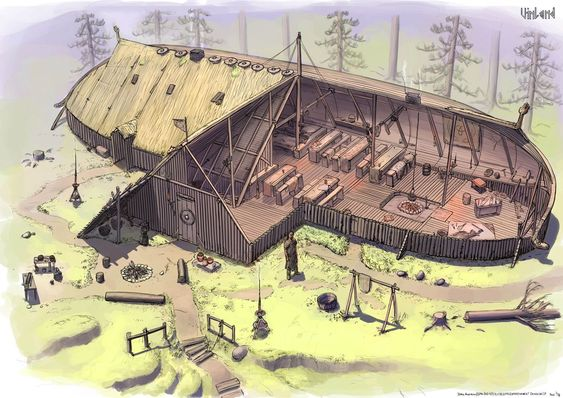
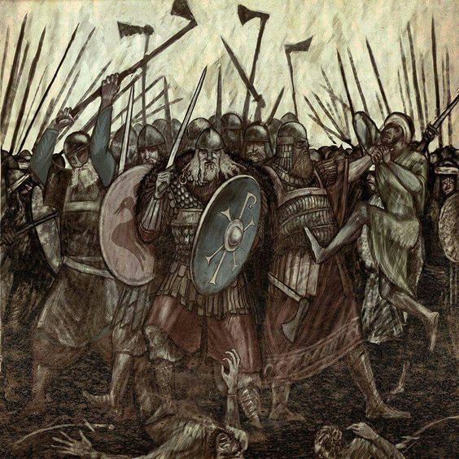

Häuser
Die Häuser der Wikinger waren nicht nur einfache Unterkünfte, sondern Zentren des Lebens und der Kultur. Ähnlich wie ihre Schiffe spiegelten sie ihre Meisterschaft der Ozeane wider. Die steilen Dächer und robuste Konstruktion erinnerten an ihre Langschiffe. Diese Häuser waren Versammlungsorte für Gemeinschaft und Feiern, ähnlich den Schiffen, die als Treffpunkt für Reisen dienten. So symbolisierte das Zuhause der Wikinger nicht nur Schutz, sondern auch ihre maritime Identität als mutige Seefahrer und Entdecker.
Familie
Die Familie war für die Wikinger von zentraler Bedeutung. Sie lebten in engen Familienverbänden, die Sicherheit und Unterstützung boten. Diese Strukturen umfassten oft mehrere Generationen und bildeten das Herzstück der Gemeinschaft. In großen Langhäusern teilten sie Ressourcen und Verantwortung. Die Familie übernahm auch Aufgaben wie Landwirtschaft, Handwerk und Erziehung, während ältere Mitglieder als Quelle von Weisheit und Erfahrung geschätzt wurden. Sogar nach dem Tod wurde die Familie weiterhin miteinander für Ewigkeiten in Walhalla verbunden.
Berühmte Krieger
Die Wikinger waren für ihre kriegerischen Aktivitäten und Eroberungen in verschiedenen Teilen Europas bekannt. Ein herausragendes Beispiel ist ihre erfolgreiche Besiedlung von Teilen Englands während des 9. und 10. Jahrhunderts. Die Wikinger führten auch Überfälle auf andere Regionen durch, wie beispielsweise Irland, Schottland, Frankreich und sogar weit entfernte Gebiete wie Sizilien und Nordamerika. Diese militärischen Unternehmungen prägten die Geschichte Europas und hinterließen ein Vermächtnis von mutigen Entdeckern und Eroberern. Ein Grund für die Mut der Vikinger war die Religion, wenn man als tapferer Krieger starb, ging man nach Wallhala zu Odin, was als eine große Ehre für alle Menschen gilt.
